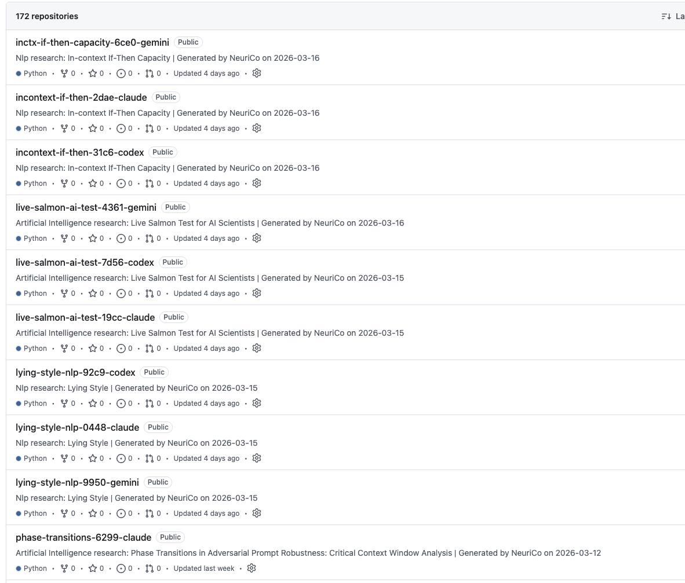
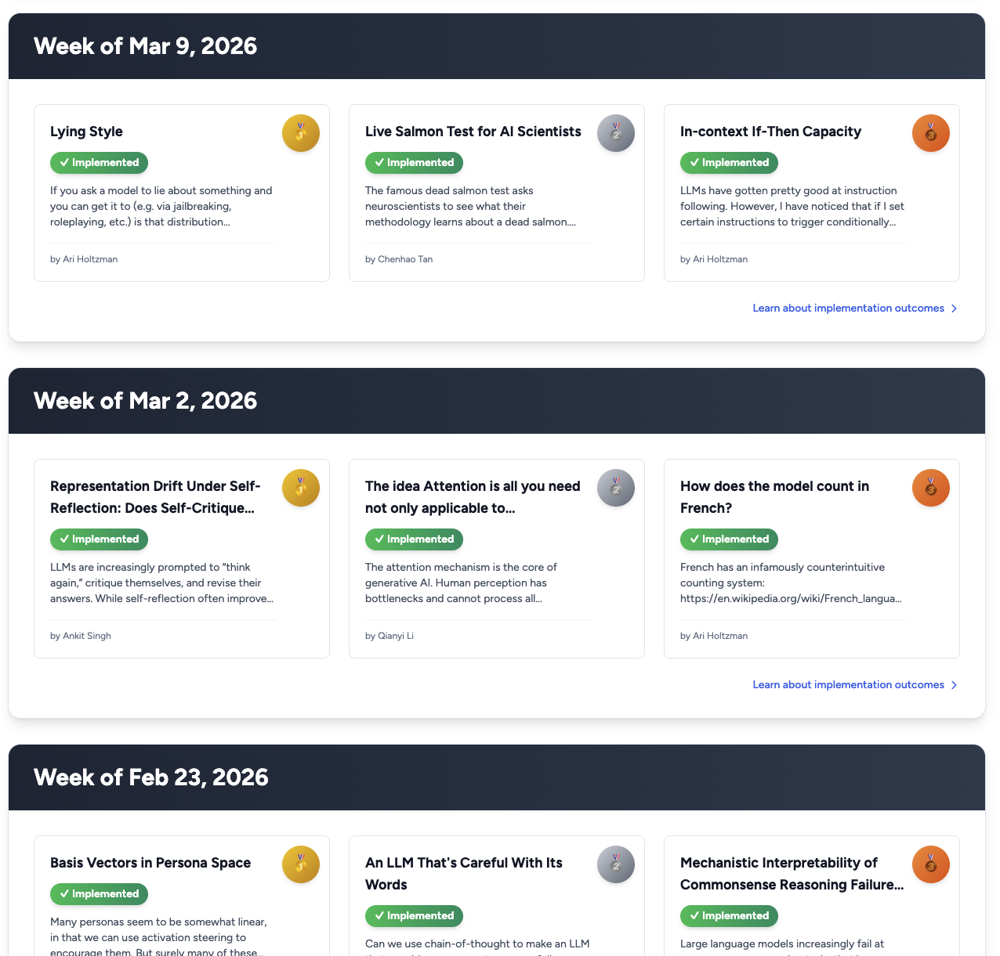

# CMSC 25750/35750: ## Large Language Models ## Lecture 1: Introduction <p style="text-align: center;"> Chenhao Tan<br/> University of Chicago<br/> @ChenhaoTan, @chenhaotan.bsky.social<br/> chenhao@uchicago.edu </p>
## About myself - Chenhao Tan ([chenhaot.com](https://chenhaot.com)): - Associate Professor of Computer Science and Data Science - Research: Human-centered AI, Communication & Intelligence, AI & Scientific Discovery, AI alignment - [Chicago Human+AI Lab](https://chicagohai.github.io) - [UChicago/TTIC Communication & Intelligence](https://ci.cs.uchicago.edu) - TAs: Dang Nguyen, Harvey Fu
## Today's agenda * Goal of this course * Course content * Science in the Age of AI * Lecture structure * Grading & project * Sign up for Roast or Toast
## Today's agenda * Goal of this course * <span style="color: #767676;">Course content</span> * <span style="color: #767676;">Science in the Age of AI</span> * <span style="color: #767676;">Lecture structure</span> * <span style="color: #767676;">Grading & project</span> * <span style="color: #767676;">Sign up for Roast or Toast</span>
## Stanford CS336: Language Modeling from Scratch <div style="font-size: 0.85em;"> Why you should take this course - You have an obsessive need to understand how things work. - You want to build up your research engineering muscles. Why you should not take this course - You actually want to get research done this quarter. (Talk to your advisor.) - You are interested in the hottest new techniques in AI (e.g., multimodality, RAG, etc.). - You want to get good results on your own application domain. <p class="citation"><a href="https://cs336.stanford.edu/">Stanford CS336</a></p> </div>
## Large Language Models (CMSC 25750/35750) This course is for you to get research done. Expect to spend at least 20 hours a week, or be very good at using AI tools. We focus on three areas: - Interpretability - Alignment - Agents A project proposal is due in the first week (Friday, March 28).
## Why these three areas? Honestly, these are the areas I care about most. Interpretability is a good entry point — it builds the vocabulary and intuitions needed to reason about LLMs. Alignment and agents are both ultimately about the relationship between humans and AI: how do we ensure AI systems serve human goals, and what does it mean for them to act alongside us?
## What you will be able to do By the end of this course, you should be able to: - Read and critically evaluate recent research in LLMs - Identify open problems and formulate research questions - Run experiments and iterate on a research project - Write a paper-quality report on your findings Discuss the goal.
## Today's agenda * <span style="color: #767676;">Goal of this course</span> * Course content * <span style="color: #767676;">Science in the Age of AI</span> * <span style="color: #767676;">Lecture structure</span> * <span style="color: #767676;">Grading & project</span> * <span style="color: #767676;">Sign up for Roast or Toast</span>
Course roadmap
Interpretability
Lectures 1–8
Attention
MLPs & Factual Recall
Transformer Circuits
Geometry of Representations
Superposition & SAEs
Chain of Thought
Interpretability for Science
Alignment
Lectures 9–13
The Alignment Problem
Scalable Oversight
Emergent Misalignment
Sycophancy
Finding Novel Behavior
Agents
Lectures 14–18
Agents & Agentic RL
LLM-based Simulation
Scientific Discovery
Frontiers
## Unit 1: Interpretability (lectures 1–8) How do we understand what is happening inside a transformer? We start from the basics — what attention heads and MLPs do — and build toward a mechanistic understanding of circuits and features. The unit ends with interpretability applied to science: can we use these tools to understand protein language models and other domains? Prerequisite intuition: you should be comfortable with transformers at the level of knowing what attention and feed-forward layers are.
## Unit 2: Alignment (lectures 9–13) How do we get models to reliably do what we want? We examine the core problem — specifying and verifying intent at scale — and then study concrete failure modes: sycophancy, emergent misalignment, deceptive behavior, and sandbagging.
## Unit 3: Agents (lectures 14–18) What happens when LLMs take actions in the world? We look at how agents are built and evaluated, how agentic RL changes the picture, and what large-scale simulation with LLM agents reveals about human behavior. The final lectures focus on the implications for scientific research: research agents, complementary AI, and what the field might look like in a few years.
## Today's agenda * <span style="color: #767676;">Goal of this course</span> * <span style="color: #767676;">Course content</span> * Science in the Age of AI * <span style="color: #767676;">Lecture structure</span> * <span style="color: #767676;">Grading & project</span> * <span style="color: #767676;">Sign up for Roast or Toast</span>
## Science is not inherently valuable. What makes science valuable is human judgment about what matters. <p class="citation"><a href="https://cichicago.substack.com/p/the-mirage-of-autonomous-ai-scientists">The Mirage of Autonomous AI Scientists</a></p>
Science is not inherently valuable.

Science is not inherently valuable.

## Science is not inherently valuable. Curiosity is inherently valuable, at least to you. Do not lose it.
## The production-progress paradox Publications grow exponentially. Scientific progress has stagnated or slowed. More output does not equal more insight.
## Science as resource allocation Science is fundamentally about allocating limited resources: time, attention, and funding. Three core activities: | Activity | Description | |---|---| | Selection | Choosing which ideas and directions to pursue | | Production | Running experiments, writing code, generating results | | Evaluation | Assessing novelty, correctness, and significance |
How AI changes the balance
Selection
Production
Evaluation
Selection
Production
Evaluation
How AI changes the balance
Selection
Production
Evaluation
Selection
Production
Evaluation
AI facilitates production. Scientists must invest more in selection and evaluation.
## Implications for this course You are encouraged to use AI tools heavily (NeuriCo, Claude Code, etc.). But you are responsible for: - Selecting the right problems and ideas - Evaluating outputs critically - Understanding what you submit The project is designed to build exactly these muscles.
## Today's agenda * <span style="color: #767676;">Goal of this course</span> * <span style="color: #767676;">Course content</span> * <span style="color: #767676;">Science in the Age of AI</span> * Lecture structure * <span style="color: #767676;">Grading & project</span> * <span style="color: #767676;">Sign up for Roast or Toast</span>
## Each lecture (80 min total) | Segment | Duration | |---|---| | Quiz on readings | ~10 min | | Lecture + discussion | ~40 min | | Roast or Toast | ~30 min | Most of the lecture time is for discussion. No laptops, except to check paper content.
## Roast or Toast Two students sign up each week. Each chooses an option: Roast — critically analyze a paper from the readings. - What are the weaknesses, blind spots, or questionable claims? Toast — propose an extension or open question. - What is the next experiment? What would you build on this? Each presentation is about 15 minutes. [Sign up on the spreadsheet](https://docs.google.com/spreadsheets/d/1JyXd9sYaxyrUc8Rovaxw4dUlxOwyA7mb-vwT58c9NHg/edit?gid=0#gid=0)
## How to read a paper Reading papers is a skill. It takes practice to read efficiently and critically. A useful starting point: [How to Read a Paper](https://dl.acm.org/doi/pdf/10.1145/1273445.1273458) by S. Keshav. The core idea: read in passes, not linearly.
## The three-pass approach First pass: title, abstract, intro, section headings, conclusion. Goal: decide if the paper is worth reading and what it claims. Second pass: read carefully, skip proofs, note key points. Goal: understand the main argument and evidence. Third pass: try to re-implement or deeply reconstruct the paper. Goal: fully understand the work and identify its assumptions and gaps. <p class="citation"><a href="https://dl.acm.org/doi/pdf/10.1145/1273445.1273458">Keshav, 2007</a></p>
## What to look for - What problem is this solving, and why does it matter? - What is the key idea or contribution? - What baselines or comparisons are used, and are they fair? - What are the limitations the authors acknowledge — and what do they not acknowledge? - Would you believe the results if you ran the experiments yourself?
## A personal note I do not read papers with the three passes approach. I probably should do it more. There are also many new tools for reading papers, like alphaXiv, that allow you to annotate and explore papers in a more interactive way. I encourage you to experiment with different approaches and find what works best for you.
## Today's agenda * <span style="color: #767676;">Goal of this course</span> * <span style="color: #767676;">Course content</span> * <span style="color: #767676;">Science in the Age of AI</span> * <span style="color: #767676;">Lecture structure</span> * Grading & project * <span style="color: #767676;">Sign up for Roast or Toast</span>
## Grading | Component | Weight | |---|---| | Quizzes | 20% | | Roast or Toast | 10% | | Assignments | 20% | | Project | 50% |
## Project goal Learn how to do LLM-related research. As a side product: a NeurIPS-quality submission (deadline May 6 — stars need to align). - All projects are individual by default. - Students can merge efforts if working on similar topics. - Read each other's proposals and blogs. You are encouraged to use AI co-scientists (NeuriCo, Claude Code).
## Project timeline | Week | Deliverable | |---|---| | Week 1 | First proposal (NeurIPS template) — due Fri Mar 28 | | Week 2 | Revised proposal — due Fri Apr 4 | | Weeks 3–6 | Weekly blog entries (Fri Apr 10, 17, 24, May 1) | | Week 7 | Draft paper — due Thu May 8 | | Week 8 | Blog update — due Fri May 15 | | Week 9 | Final report — due Thu May 22 | All submissions via GitHub PRs in the course repo.
## Potential project topics - [SAIR Mathematics Distillation Challenge](https://competition.sair.foundation/competitions/mathematics-distillation-challenge-equational-theories-stage1/overview) - [Breaking AI detection](https://github.com/Hypogenic-AI/residual-stream-ai-a924-claude) - [NeuriCo Roadmap](https://github.com/ChicagoHAI/NeuriCo/issues/53) - [OpenAIReview Roadmap](https://github.com/ChicagoHAI/OpenAIReview/issues/23) - Your own research project (all weekly requirements apply and must be new content) *Bonus (up to 5%): selected projects will present at the end of the course.*
## Today's agenda * <span style="color: #767676;">Goal of this course</span> * <span style="color: #767676;">Course content</span> * <span style="color: #767676;">Science in the Age of AI</span> * <span style="color: #767676;">Lecture structure</span> * <span style="color: #767676;">Grading & project</span> * Sign up for Roast or Toast
## Sign up now [Open the spreadsheet](https://docs.google.com/spreadsheets/d/1JyXd9sYaxyrUc8Rovaxw4dUlxOwyA7mb-vwT58c9NHg/edit?gid=0#gid=0) and sign up for a Roast or Toast slot. - Pick a week you are interested in. - Mark whether you want to Roast or Toast. - You will present based on the readings assigned for that week.
# Questions?